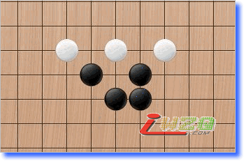
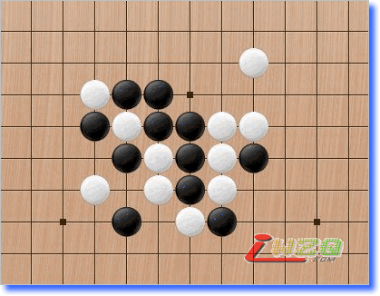

五子剑系列讲座之六【五子棋初级习题】
#1 五子剑系列讲座之六【五子棋初级习题】 作者：有志青年 发表时间：2007-12-11 15:24:50
注：五子剑五子棋系列讲座教程出自掌棋盟论坛，版权归原作者本人及掌棋盟论坛所有，未经许可，请勿私自转载。爱五子棋网站已获授权。
下棋这几年，飘飘零零的真正踏实在下棋的时间并不多，利用空闲的几天写下个人的一些经
验，希望可以对棋友有所帮助！
我认为下棋最重要的是态度和方法，你对五子棋的热爱程度以及学棋时所用的方法是提高
的关键！
阅读的顺序为：
五子棋初级→五子棋初级花月→五子棋初级蒲月→五子棋初级习题→
五子棋中级→五子棋中级云雨月→五子棋中级寒星→五子棋中级银月→五子棋中级习题→
五子棋ＶＣＦ习题集→五子棋高级
所有截图画面是ＬＩＢ、五子妙手３.０、ＱＱ游戏五子棋单机版能有如此多的人爱好
五子棋是最令人高兴的事，如此多的人为了同一种游戏来交流甚至痴迷！
感谢所有下五子棋的朋友，祝大家笑口常开、一生平安！
棋友：五子剑
#2 五子剑系列讲座之【五子棋初级习题】-1 作者：有志青年 发表时间：2007-12-11 15:30:59
提高对禁手的认识：
以下均在棋盘中心位置！
一、白先，白棋如何利用黑棋禁手胜？
二、白先，白棋如何利用黑棋禁手胜？
三、白先，白棋如何利用黑棋禁手胜？
四、白先，白棋如何利用黑棋禁手胜？
五、白先，白棋如何胜？
六、白先，白棋如何胜？
前面六题比较简单，后面的要相对复杂一些！
七、白先，白棋如何胜？
八、白先，白棋如何胜？

九、白先，白棋如何胜？

十、白先，白棋如何胜？
#3 Re:五子剑系列讲座之【五子棋初级习题】-2 作者：有志青年 发表时间：2007-12-11 15:36:59
一、黑先，如何胜？
二、白先，如何胜？

三、黑先，如何胜？
四、黑先，如何胜？
五、黑先，如何胜？
六、黑先，如何胜？
七、黑先，如何胜？
八、黑先，如何胜？注意白在上面做长连！
九、黑先，如何胜？
十、黑先，如何胜？注意白反四！
#4 五子剑系列讲座之【五子棋初级习题】-3 作者：有志青年 发表时间：2007-12-11 15:41:59
一、黑先，如何胜？
二、黑先，如何胜？注意白反四！
三、黑先，如何胜？
四、白先，如何胜？
五、白先，如何胜？
六、白先，如何胜？
七、白先，如何胜？
八、黑先，如何胜？
九、黑先，如何胜？

十、黑先，如何胜？
#5 五子剑系列讲座之【五子棋初级习题】-4 作者：有志青年 发表时间：2007-12-11 15:46:59
一、黑先，如何胜？
二、白先，如何胜？
三、黑先，如何胜？

四、黑先，如何胜？
五、黑先，如何胜？
六、黑先，如何胜？
七、黑先，如何胜？
八、白先，如何胜？
九、黑先，如何胜？
十、白先，如何胜？
#6 五子剑系列讲座之【五子棋初级习题】-5 作者：有志青年 发表时间：2007-12-11 15:51:21
一、黑先，如何胜？
二、黑先，如何胜？
三、黑先，如何胜？

四、白先，如何胜？
五、黑先，如何胜？
六、黑先，如何ＶＣＦ取胜？
七、黑先，如何ＶＣＦ取胜？
八、黑先，如何胜？
九、白先，如何胜？
十、白先，如何胜？
#7 Re:五子剑系列讲座之六【五子棋初级习题】 作者：小辉 发表时间：2008-3-22 11:49:32
挖塞 我不懂禁手啊#8 Re:五子剑系列讲座之六【五子棋初级习题】 作者：旅行者 发表时间：2008-5-10 23:01:43
哎，好多都不会啊？
#9 Re:五子剑系列讲座之六【五子棋初级习题】 作者：明镜止水 发表时间：2008-5-27 1:16:50
偶觉得五子剑系列讲座之【五子棋初级习题】-4中的第四题有一个白子排错了。由于偶是初学者，如估计错误，请楼主原谅！#10 Re:五子剑系列讲座之【五子棋初级习题】-1 作者：我把自己丢拉 发表时间：2008-7-3 9:10:59
首先感谢有志青年老师的讲座让我越来越喜欢五子棋,并受益匪浅.我只做了前六道题想请您指正一下,可不会上传,用的是RENLIB软件.
#11 Re:五子剑系列讲座之六【五子棋初级习题】 作者：有志青年 发表时间：2008-7-3 9:35:12
更正一下，这个讲座是五子剑老师的哟。
如果想上传答案，可以有三种方式：
1、如果是单分支的答案且没有注释文字，可以参考如何在帖子中添加棋谱ShowPost.asp?ThreadID=3436
2、如果是多分支的答案且想通过贴图片来发帖，可以参考帮助：如何在帖子中插入上传图片ShowPost.asp?ThreadID=3887
3、如果是多分支的答案且想通过互动谱来发帖，可以参考如何发rena互动谱详细说明ShowPost.asp?ThreadID=3319
#12 Re:五子剑系列讲座之六【五子棋初级习题】 作者：秋水长天 发表时间：2008-10-5 10:06:13
禁手的我一个也做不出啊#13 Re:五子剑系列讲座之六【五子棋初级习题】 作者：胡囵吞枣 发表时间：2008-10-18 8:21:01
五子棋初级习题1里面，第5题错了，无法抓禁~#14 Re:Re:五子剑系列讲座之六【五子棋初级习题】 作者：齐羽 发表时间：2009-12-10 21:52:59
引用：
原文由 胡囵吞枣 发表于 2008-10-18 8:21:01 :
五子棋初级习题1里面，第5题错了，无法抓禁~
=======上图对应的爱五子棋谱代码如下，以便你拆解：========
h8h7i9g7f7g6h10i8f5g8g9j9k10i6f9f6h9e9h11h12h6g4g5j7h5k7i7
======================================================
#15 Re:Re:Re:五子剑系列讲座之六【五子棋初级习题】 作者：汤孝松 发表时间：2009-12-17 10:22:50
我做起可以抓禁手#16 Re:五子剑系列讲座之六【五子棋初级习题】 作者：小帮帮 发表时间：2009-12-17 22:34:13
这么多基础题啊？#17 Re:五子剑系列讲座之六【五子棋初级习题】 作者：山东星月皎璨 发表时间：2011-6-24 10:57:57
第10题不是抓禁手取胜吧#18 Re:五子剑系列讲座之六【五子棋初级习题】 作者：灿尔哈察苏 发表时间：2011-8-9 11:05:26
抓禁手你怎么能让他按照你的想法走呢？？这些题有没有答案啊 做出来的上传一下好学习一下嘛！#19 Re:Re:五子剑系列讲座之六【五子棋初级习题】 作者：如血残阳 发表时间：2011-8-19 16:38:09
解答第一题：
=======上图对应的爱五子棋谱代码如下，以便你拆解：========
h8i8i7j7h6h7g7j9g6j8
======================================================
［此帖子已被 如血残阳 在 2011-8-19 16:39:41 编辑过］
#20 Re:五子剑系列讲座之六【五子棋初级习题】 作者：如血残阳 发表时间：2011-8-19 16:42:03
解答第二题：
=======上图对应的爱五子棋谱代码如下，以便你拆解：========
h8i9i7g9h7h9j9g7i8e9f9g6
======================================================
#21 Re:五子剑系列讲座之六【五子棋初级习题】 作者：如血残阳 发表时间：2011-8-20 7:10:43
解答第三题，请审阅。
=======上图对应的爱五子棋谱代码如下，以便你拆解：========
h8i8g8g7i9h7k7i7h6j7f7g6j9k6
======================================================
#22 Re:五子剑系列讲座之六【五子棋初级习题】 作者：如血残阳 发表时间：2011-8-20 7:12:45
解答第四题，请审阅。=======上图对应的爱五子棋谱代码如下，以便你拆解：========
h8h7i8i7g7i6j5g8g9g6h10f6h6f9e10f7
======================================================
#23 Re:五子剑系列讲座之六【五子棋初级习题】 作者：如血残阳 发表时间：2011-8-20 7:31:35
解答第八
=======上图对应的爱五子棋谱代码如下，以便你拆解：========
h8i9i7g9j7k9j8j9h9g6h6h7
======================================================题，请审阅。
#24 Re:有志青年【==Re:五子剑系列讲座之【五子棋初级习题】-2==】 作者：的濡 发表时间：2012-7-23 17:19:08
第十题怎么解#25 Re:旅行者【==Re:五子剑系列讲座之六【五子棋初级习题】==】 作者：不灭勇士 发表时间：2013-8-11 20:36:44
难呀#26 Re:五子剑系列讲座之六【五子棋初级习题】 作者：平凡人生 发表时间：2013-12-10 7:40:43